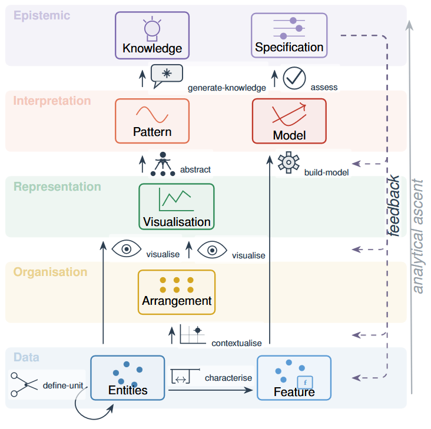
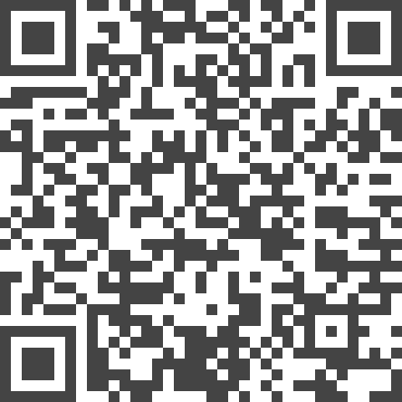

ATWL: A Formal Language for Representing, Comparing, and Reusing Visual Analytics Workflows

(opens in new tab)
Venue. arxiv (2026)
Materials.
DOI(opens in new tab)
PDF(opens in new tab)
Abstract. Visual analytics (VA) workflows are inherently complex, involving data transformation, feature engineering, visual representation, and human interpretation. They are typically described in unstructured prose, hindering systematic comparison, reuse of proven strategies, and training of novices. We present Artifact-Transform Workflow Language (ATWL), a domain-agnostic, declarative language that formally represents VA workflows by capturing their structure and underlying analytical intent. ATWL is built upon a modular ontology of eight artifact types (entities, features, arrangements, visualisations, patterns, models, knowledge, specifications) and transforms characterised by standardised intents (e.g., define-unit, characterise, contextualise, abstract). To show that formalisation effort need not impede adoption, we extract workflows from research papers through supervised interaction with LLM agents, reducing the human role to review and refinement. Using this process, we constructed a library of seventeen ATWL workflows from published VA papers. Cross-workflow analysis reveals structural regularities -- a recurrent meta-structure, recurring motifs, reusable building blocks, diverse iterative strategies, and cross-domain equivalences -- that remain invisible in prose. We further evaluate practical utility through a controlled experiment in which the same LLM addressed two analytical problems with the library supplied either as original papers or as ATWL representations. Both forms enabled useful recommendations, but the formal representation systematically added explicit iteration structure, typed data flow, fragment-level adaptation provenance, and compactness supporting scaling beyond what prose libraries can fit in an LLM's context. ATWL enables a transition from narrative descriptions to formally represented, comparable, and reusable analytical knowledge.
Link to this page:
